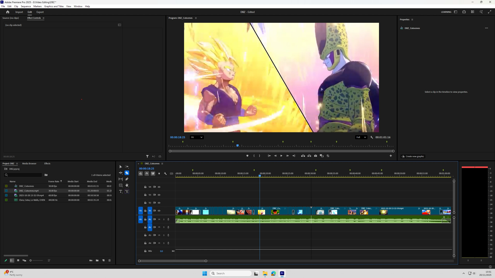
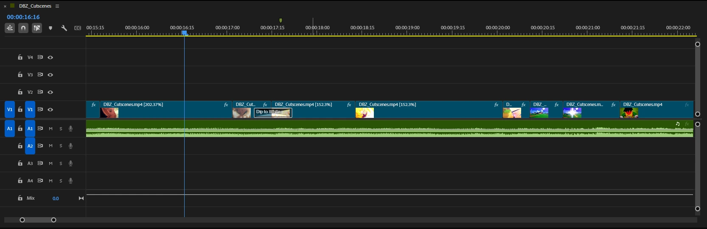

This is a close shot this is because it zooms into the the character allowing a better connection between the player and character. This is done as you can see more emotion within the facial expressions. Here you can see the main character thinking.
Ananta
About the game
This game is a open world RPG game which is currently in development by the Hangzhou-based studio Naked Rain and published by NetEase. The style is anime cel-shaded which can add for fun combat as it can break physical limits which we don’t have in real life. The audience for the game Ananta is very large this is because it plans to be released on all platforms and aiming for people who enjoy open-world RPGs and those that play games such as GTA, Batman Arkham. The story of the game is that you play the role of an elite agent for the Anti-Chaos Directorate (A.C.D.) in the open-world city of Nova City.


This is a very wide shot this is because it can see the environment with the point of interest being the red car as it stands out. This allows the player to get a sense of location as they drive through the city. Here you can see that they are on a dual carriage way. The lighting also represents happiness due to it’s bright colours.

This is a wide shot this is because we can see both environment and characters allowing us to see more of the scene. This allows the player to see what is happening. Here they are driving on a bridge and taking in the scenery.

This is a over the shoulder shot this is because it can be used to build tension. Here you can see the main character overlooking some bad guys building tension between them as it looks like we are being sneaky.

This is a wide shot this is because it features numerous characters and the environment allowing the player to get a better sense on what is happening. In this scene we can see that we are a camera which allows the player to gather information on what is happening in the other room

This is a ariel shot this is because it features a large majority of the city from top view. This allows it to showcase it’s large open world rpg. In this we can feel the significance of how big the city is making the player want to explore more.
The timing of the trailer is fast and action packed this builds tension within the trailer. It also showcases a large amount of gameplay showing the best of it. In the intro we are introduced to the two main characters wondering how they got there and that they forgot their paycheck. We then get a montage between different points of interest in the game. As it shifts more into destruction and combat. Which features in the gameplay. With a fade that has reparation of phrases.
Project Feline
About the game
This game is a 3D platformer game which is currently in development by a indie dev (Raymond Cripps). The style is anime cel-shaded which can add for fun combat as it can break physical limits which we don’t have in real life and designed to be a fasted pace allowing interesting speed runs. The audience for the game is for those who follow his socials and those that like 3D platformers. The story is currently changing this is because it is still in early development and not finalised as there is no confirmed released date. However, there is a open pre-alpha where you can play the current version.

This is a wide shot this is because of the FOV is more stretched therefore, allowing the player to see more of the world. The effect of this allows the player to make it feel like they are running super fast.

This is a very wide shot this is because the the FOV is further away from the character and you can see the word. This is to show how fast they are going around.

This is a wide shot however, this time there is no momentum this allows the player to see the world for it style. .

This is a close shot this is because you can see two characters and part of the world which allows the story of the character

This is a close shot which also had a bit of camera shake. This is because it shows the amount of power that the character has.

This is a very wide shot this is because the the FOV is further away from the character allowing you to see the speed on the character to how the world is moving.
The timing of the trailer is fast and action packed and very quick this is also heavily gameplay instead of cinematic shots like the last one. It is also edited in a way like montage. This means it feels less of a trailer and more of a gameplay demo. Due to it not inclueding any cinemtaic shots it is less engaging. However, this is a indie game and it is not a trailer for a release. All the shots are the same therefore, it is less diversed but makes it up in the transitions. It is also shorter than the last trailer.
Compare the trailers
In a side by side comparation I would say that the Ananta trailer was more interesting and hooking as it showed numerous different types of gameplay which hooked me in more. However, comparing a indie game and industry game is unfair.
These two games are very different the Ananta trailer is for a release and the Project Feline trailer is for a pre-alpha. They have the same theme with both being anime games. They are made very different from each other and you can see the difference instantly. I love the duration of Project Feline trailer it is short and to the pont whereas, Ananta trailer is long and engaging shwoing different gameplay features and cutscenes. This encourges me to want to buy the game.
What features do I want in mine
I want to use numerous camera angles and transitions as it will hook the target audience to it. Ananta trailer had a large amount of cutscenes at the start and shifts to the gameplay. I want to do the same thing. But with the quick and fast edits that Project Feline trailer had.
Which game am I doing?
The game i have chosen is Dragon Ball Z Kakarot this is because I believe a mix of both cinematic and gameplay for this game will make a good trailer. I also think it will be good because it's captures some of the story telling that the anime had. I would also be able to get the style I want from this game. As it has the requirements that I have fot the trailer. This is because of the amount of cutscenes and gameplay.
The audience is aimed at those who are already interested in the dragon ball franchise however it's age demographic is aimed for 12 up. It's aimed at those who is into anime games this is because a large majority of them have very similar gameplay mechanics.
Who is the target audience?
The trailer is aimed at those who have an interest in the dragon ball z kakarot or anime games this is because most anime games follow the same formula. I'm also planning to release the trailer on YouTube this means on average 12+ age ranges this means the demographic has a large age rating.
Dragon ball Z kakarot has already achieved a audience with the recognition from the loved anime dragon ball and also for the developers CyberConnect2.
The best reach for my audience is social media such as YouTube this is because they used the same platform and managed to get good like to dislike ratio and viewers was much entertained allowing the view time to go up.
What is the purpose of the trailer
I am making this trailer so that I can showcase Dragon ball Z kakarot at it peak with battles from the anime as well as the different characters you can play as showcasing all the unique ideas and gameplay. To show the Dragon Ball fans the unlimited potential the game has. This is for the audience of Dragon Ball Z kakarot with its age demographic and those that are interested in anime.
The USP is that it will bring the anime and game together recreating iconic scenes from the anime allowing people to make their own side by side comparison.
What is the plan for my trailer
I want to introduce the 3 main villains from dragon ball Z (frieza cell and buu) this introduction will show their opening cut scenes. This will go on for around 25 - 30 seconds
We are then introduced to the main characters such as Goku (kakarot is his Saiyan name) and the side characters (krillin gohan and vegeata) (45 - 50 seconds)
We will then see a montage between all 3 fights against the villain. (35 - 45 seconds) in this short time you will see the beginning middle and end of those fights
Finally you will be able to see the introduction which then title screen which will end the trailer.
The song that I have gone for is Numb Pain this is because I think that the song would greatly reflect the tension between the fights and that it would be a good reflection of the game. The song is also iconic from different anime AMV which I can take inspiration from. Such as transions and the style of the video. I also think certain lyrics would reflect the story of the game as well as the title. This is because the fighters suppass their limits in each fight and the song I think reflects that due to numb the pain.
Time management
-
Week 1: I started my planning and exploring what type of games I should record these
game where some of the following Fortnite rocket league and roblox however I chose against these ideas
because
- Fortnite: it feels super over rated knower days and would have felt less effort due to how many opportunities that it can provide.
- Rocket league: this was one of my ideas however due to its limited gameplay and though replays looked good i could not use the .replay files in my editor of choice.
- Roblox: it's not a game as such and more of a platform which contains games which would have created more options to choose from and get distracted by.
- Week 2: I finished my plan and now I need to start my research this is where I had to chose 2 already made trailers and annotate them. This was difficult but I picked the two games which I am mostly looking forward to playing.
- Week 3: This is when I started to record my footage on OBS for the game i decided on in my plan. However this was not done in one session and did run to week 4.
- Week 4: This was a recording week using OBS as the footage recorded was scattered throughout the game and i would have to replay the game in order to get the required clips.
- Week 5: This is the week of editing research and editing itself. I first wanted to pick my video editor as we had a choice on what software to use. I use windows during college but at home I use Linux therefore I neded to find one that is compatible with both operating systems which ended up being….. I then looked at some tutorials and followed them using my own footage as tests. At the end of the week I started to video edit but ran into week 6
- Week 6: At the start of this week I started to understand the software and by end of the week I was reviewing the video and sending it to friends for feedback
- Week 7: This is when I started to refine my work and made sure that I covered all the criteria. I also used the feedback provided to improve the video.
Production
- Premiere Pro: This is my video editing software of choice. This is because it is industry standard and and a lot of features. It is also one of the most well known video editing softwares.
- OBS Studio: This is a free to use software which is used to record the game. It is also very well known by streamers and YouTubers. As they use the software very often it is also one of the easiest to use and captures the gameplay very well.
Due to the game being about 12 hours to complete and that I believe if I was to record all the footage required I would end up falling behind my assignment therefore I decided to use all the cutscenes from a already made trailer.
However, I did record some footage of the game and I plan on using it.
Recording
I started to record my footage on OBS for the game however due to it being a long game and the footage being scattered throughout the game I decided to record the first hour of the game in order for it to be completed in time. However, in the future I would like to use my own footage and not have to worry about running out of time. To get the best results I could. In the industry most footage would be handed to the editor and they would be able to use it to create a trailer. Therefore, I am trying to be industry standard by using footage on YouTube. I only used the cutscenes from the video above.
editing

I started by importing my footage into Premiere Pro which is when I realised my first problem. Editing 1 - 2 hours of footage to shorten it down to 90 seconds and having both clips this long was very hard to manage. However, I have came too far in order to back out now. I also relised how my plan was insignicant this is because I haven't got the full gameplay which I wanted to use and that deadline was becoming very close. To deal with this I decided to ditch my old plan and to wing it and see what I could do. This I would not recomend doing as I did not know what I would ended up with.
I my next step was reconcidering what clips I would like to use in the trailer. I decided to go with a cutscene trailer this is becausse there was more of it compeared to gameplay footage. I wanted to stick to the orginal plan as close as possible. I then started to edit the trailer in a way that could help me in the long term if changes are needed.
Once the music was in. I then started to edit the cutscenes. I wanted to do this first as there are a lot of them which I would have to choose from. Due to it taking the majority of my timeline this helped me fill in the gameplay footage. I am disappointed that I couldn't add more gameplay footage to the trailer due how long it would have took me to source this in my gameplay.

I listened to the music and tried to use markers for when the beat of the music changes. I then started to cut my clips which are edited so that each camera change for example environment to character there was a cut. This allowed me to rotate them in a way that could fit with the music. I also added some transitions which are mostly reused throughout the trailer. This is because a large marjority felt like it just fitted and did not need a transitions. I tried to beat match the music to the footage as close as possible.
Reflection
Based on the feedback I received people thought the trailer was mid with a raiting of 3.17 out of 5. MEaning I managed to get 63.40% of liking. This is good as it was my first attempt at a trailer and using software which I never used before. I got mixed feedback on the trailer music as some people liked it and some people did not some thought it was okay but could have been editied a little better with beat matching. The biggest issue was more people wanted to see more gameplay footage in the trailer. This is because less than 5 seconds was gameplay footage and the rest was cutscenes. I also want to learn how to present my questionair better this is because I wanted to link my trailer to the questionair but I could not find a way to do it so it appeared as a quetion which 2 people questioned it. I also think I made the questionair very open with 1 closed question which allowedd more acruate feedback. I would also like to ask more questions which is more direct this is because I feel like it would help get a more accurate feedback. Questions I could of asked is what alternative songs would you have used? This is because the music had mixed feedback. Some people gave me in person feedback that they liked though could have done with sound effects or maybe even the characters voices.
I completly agree with all the feedback that I got as a large marjority of it was what I was thinking of doing. But things such as gameplay, my lack of knowledge on how to use the software and late relisation that I messed up the plan. But I managed to get new skills from this project which is a nice skill which I developed which I want to work on in the future but look at different software to use as it would be nice to have home and college access.
What went well
I think the fact that I used a new software which I never used before was a good achievement. I also enjoyed the learning process of using the software and I think I did a good job at presenting my trailer.
Even better if
I think I should off added more gameplay footage to the trailer as I received mixed feedback on it. I also strongly agree that I shouldn't have subtitles on the footage as it can be very annyoing to see when there is vocals on the trailer. I also think that I could have used sound effects to make the trailer better. I would of also used a software which I could of accessed from home and college as that would of eased the workflow better as I would of been able to work on it from home allowing me to not worry about the deadline as much as I needed to,. Overall though I am very happy with mny project.
One issue when making this trailer is that I dd not record enough gameplay footage. This is because I recorded the gameplay footage but relised how long it would take to complete the game and getting the clips that I wanted. Another issue was that I had was that I didn't follow the plan because of two reasons. The first reason that it a large game to cover in a short period of time which made me feel like it would have been waste if people could only see 90 seconds of a 12 hour game which I would have recorded. THe second reason was that I didn't follow my orginal plan for the trailer this is because I diidn't relise how short the trailer had to be and relised I over planned it making it around 3 minutes long. This was a hard blow to my idea as I had to cut a lot of the footage out from my idea. This is because I wanted mostly cutscenes at the start then shift to gameplay footage. similar to what Ananta.
I would have used my research and planning to help me make my game trailer but due to the late relization of numberous things that went wrong I was unable to use it to its full potential. I also would want to use a different software such as DaVinci Resolve as that is free to use. I would also like to add sound effects to the trailer and make it better as I forgot to add it to the trailer. I would also like to add more gameplay footage to the trailer as I only added a small amount of it. I would also of liked expanding the time frame given however, in the industry expanstion of time is very hard to do. I also think watching different trailers and analysing them would of helped me make a better trailer.